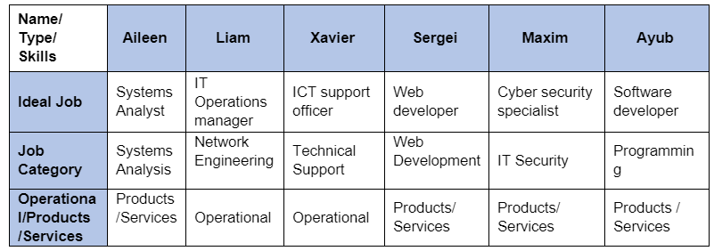

Career Plans
This table displays each group members Ideal job, the category it fits for IT work, and whether it is Operational or sells a product/service.
Maxim
My career plan at this current moment is to continue working as an Audio Visual Technician, and while my studies progress, move towards a Field Engineering/ Programming role. This will help me put my coding/ networking and IT principles into practice while I study. I plan to focus on coding and software knowledge and major in Security and Cloud Computing. Once I have completed my degree, I plan to find a role as a cyber security specialist and solidify my knowledge for five or so years. Once I am an effective member in a cyber security team, I would like to move into management or a consultancy role.
Liam
My career path currently is in action as I currently work as a level 2 desk technical desk support. This experience will assist me greatly in implementing my current expertise into my future career plans. My ideal job consists of me being able to work in both a technical skill set as well as interpersonal. Each person in our team has chosen different career paths. A significant similarity between our team's ideal career paths is that they require a high level of IT-specific technical skills. Xavier and I share the role requirements of a high level of interpersonal skills as we will work mostly face-to-face with non-technically skilled individuals. A role like Web Developer (Sergei), Cyber Security Specialist (Maxim), Systems Analysis (Aileen) and Software Developer (Ayub) all have a firm focus on programming skills of various languages. In contrast, Xavier and my role require a stronger focus from an IT operational perspective, with less of a focus on programming. We are all currently at different jobs, some with technical experience and some with very little. We are all progressing toward our future ideal jobs by undertaking this Bachelor of IT. Myself and Aileen are already working as IT professionals, just not in our ideal job(s).
Xavier
I am currently in a teaching career; however, this is not what I would like for myself in the future. I have decided to change my career path by starting a bachelor's degree in Information Technology. I chose the position of an ICT support officer as my ideal job; however, as my experience changes throughout the continuation of my degree, I may reflect on what I want to do in the future. I know that a position in the IT industry is what I want. An ICT support officer is still the position I would like as this position has large amounts of interaction with other people and will provide experience and skills to take into any future positions that I may decide to pursue in the future. There are similarities with many of my group members for this role as it is a role that involves the management of people. This is a skill that is in line with others in my team who want the same managerial positions for their careers. I feel my position is different from my peers, as it is less specialised than others in my team. The career path I have chosen is focused on the maintenance of systems, which is shared in traits by roles chosen by my team members, Liam and Maxim. Aileen, Sergei and Ayub’s career paths have are more consumer based and require more of a project management and marketing approach.
Aileen
Currently, I’m an ICT Supervisor that looks after a network of schools and 13 technicians; it is the equivalent of a Service Delivery manager in the industry. I’ve decided to expand my understanding of IT through gaining a bachelor’s degree in information technology, hopefully specialising in data analysis as we’ve become such a rich information society. I believe all industries will need data analysis as this information can be valuable and helpful in making strategic and well thought out business decisions. The common elements across all our team members’ ideal jobs are communication and people skills, problem solving and analytical skills. High levels of communication and people skills ensure that projects and issues are identified, managed, completed and resolved in a timely and efficient manner. My ideal role, systems analyst, is different from others in requiring presentation skills, negotiator skills, planning and critical thinking skills to understand what information a company/organisation will require from data collected. Liam, Maxim and Xavier’s roles revolve around ensuring systems are running and operating, versus mine, Sergei and Ayub being in the business of producing ‘products’ and ‘services’.
Sergei
My career plan and the ideal job is Web-Developer. This work requires in-depth knowledge of programming, languages such as PHP, JavaScript, HTML, CSS, SQL, and much more that is required for the normal operation and creation of Internet sites. Of course, there is a lot of similarities with the ideal jobs of our group members. My job requires a lot of analytical work, which is also a trait shared with Aileen’s ideal role. It also requires knowledge of networks to connect to remote databases and servers; this is where my ideal job is like the ideal job of Liam. Technical support like Xavier is also an integral part of the Web Developer job. I will always need to configure the server and databases to suit my needs. IT Security, like Maxim's, is the most important part of PHP Security to make the internet site secure and sustainable. The most significant similarity to my ideal job is Ayub's ideal job. Web Development is programming in certain languages. As we can see, my ideal work is closely related to the ideal job of our group members.
Ayub
My career plan has been set in motion this year working in a tier 1 tech support role. However, my ideal career is to be a software developer, also known as a DevOps engineer. This would require me to be knowledgeable and competent in many programming languages for the smooth running of the role to work in the field of tech, all the while being able to research, design, implement, and manage software programs. There are various similarities between my ideal role and the ideal roles of my teammates, most notably Sergei. Working in Software development requires a high degree of analytical work, whereas the ideal role of Liam, Maxim and Xavier are more technical work.